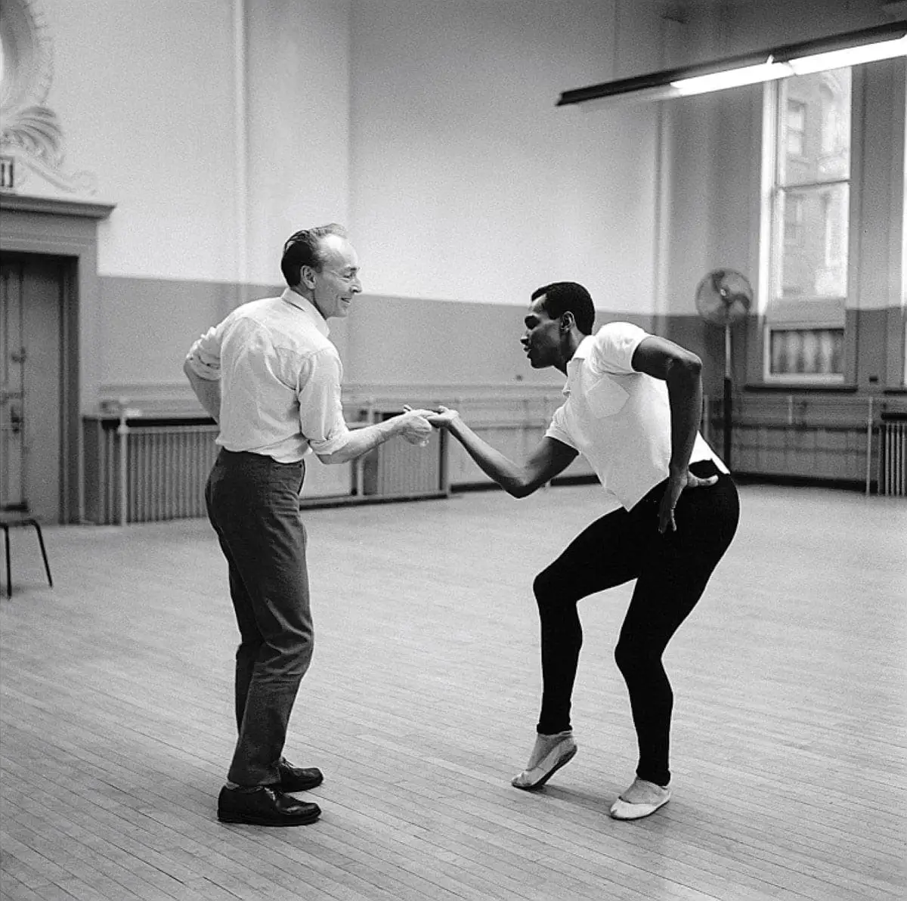
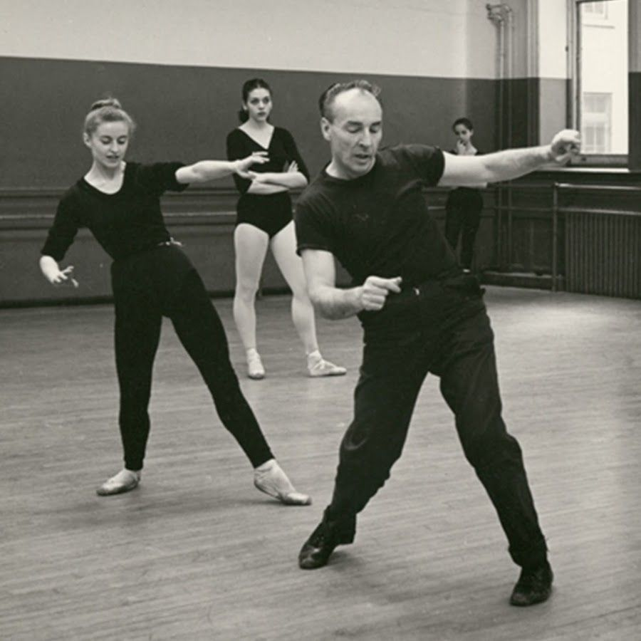
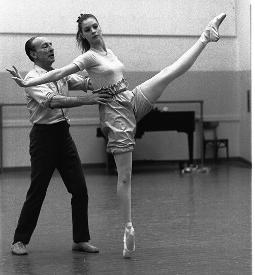
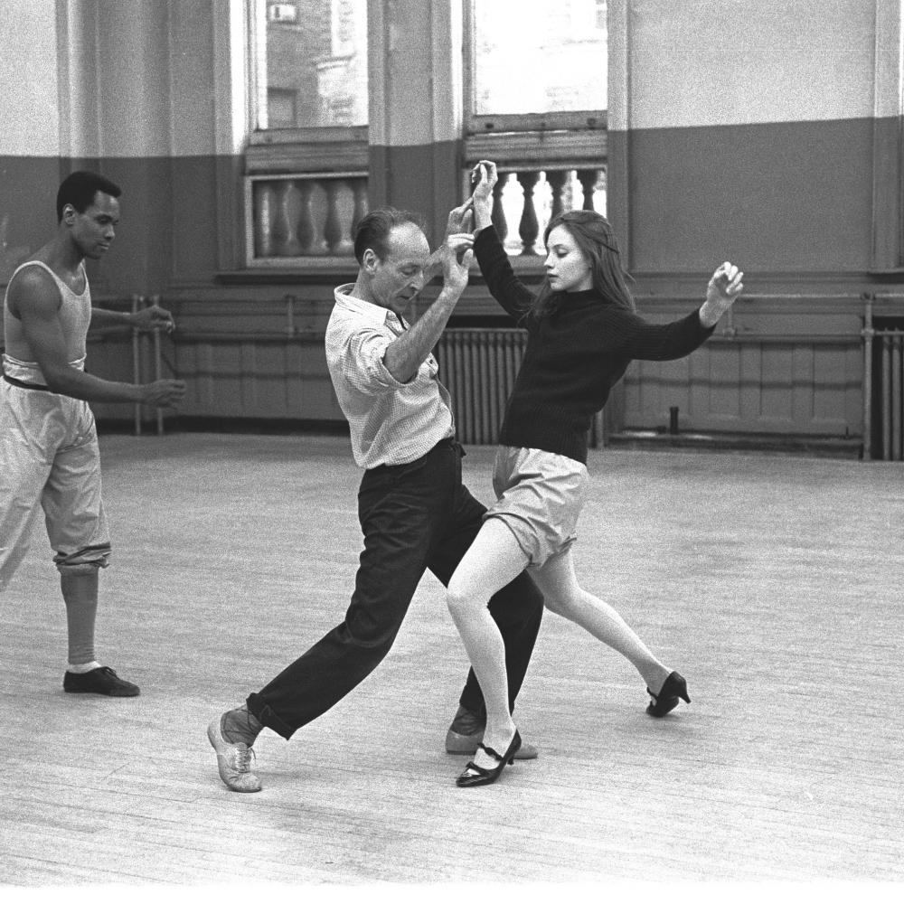

Ballet Choreographer
Founder- New York City Ballet + School of American Ballet
George Balanchine
Years in the Industry
68 years
Pieces Completed
465 works
I was born in St. Petersburg, Russia and made my debut at Maryinsky Theatre Ballet Company as Cupid at age 10. I immigrated to American in 1933 with a dream to create my own ballet company, founded on the neoclassicla style. I founded the New York City Ballet as artisitc director and chief choreographer in 1948. My most notable works include The Nutcracker (1954) and Don Quixote (1965). I also choregraph for film and musical theater.




- A Midsummer Night's Dream
“The course of true love never did run smooth,” laments Lysander in A Midsummer Night’s Dream. In Shakespeare’s comedy, an evening of mischief, merriment, and mismatched couples reaches a pinnacle when the fairy queen Titania falls madly in love—with an actor with the head of a donkey. It’s enchantment as revenge by the fairy king Oberon. The mishaps accelerate when the realms of fairies and mortals intersect in the forest after dark. Oberon and his servant Puck’s attempts to simplify the tangled relationships of two human couples only creates more misunderstanding. - Coppélia
The ballet is about a girl named Coppelia who sits on her balcony all day reading and never speaking to anyone. A boy named Franz falls deeply in love with her and wants to marry her, even though he is already engaged to another woman. His fiance, Swanhilda, sees Franz throwing kisses at Coppelia. Swanhilda soon learns that Coppelia is actually a doll that belongs to Doctor Coppelius, the mad scientist. She decides to impersonate the doll, in order to win the love of Franz. Chaos ensues, but all is soon forgiven. Swanhilda and Franz make up and get married. The marriage is celebrated with several festive dances. - Don Quixote
Driven by the vision of Dulcinea the ideal woman, the tarnished (yet inspired) Don Quixote begins his adventure with his trusty squire Sancho Panza, in tow. - The Nutcracker
It is Christmas Eve in the late nineteenth century at the Von Stahlbaum home. Excitement runs high as last minute preparations are made. Grandparents and guests begin to arrive to celebrate the holiday with Clara, Fritz and their parents. Arriving late in the midst of the celebration is Herr Drosselmeyer, Clara's mysterious godfather. He entertains everyone with magic tricks and mechanical dolls. He presents clara with a wooden nutcracker soldier. Clara falls asleep that night and dreams of a grande battle between mice and soldiers. The wooden solidier has come to life and defeats the evil mouse king. In celebration, the Christmas Spirit guides them to the land of sweets. A celebration is called to honor their defeat of the Mouse King. The Sugar Plum Fairy and her Cavalier dance for Clara. Everything is so beautiful, and Clara's heart is filled with happiness. As the festivities draw to a close, Clara reluctantly waves goodbye to the Kingdom of Sweets and to all her new friends. Her dream-maker, Drosselmeyer, leads her safely home where the Spirit of Christmas will remain in her heart forever. - List of My Complete Works